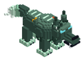

Bestiario › Único


Variantes de color
Lupus Umbralis
Lobo Fantasmal de la Turbera
Hostil Cuadrúpedo Único
Lobo fantasmal enorme de pelaje azul de humo que se deshace en niebla por la cola y las patas; solo se le ven bien los ojos, que brillan entre las hojas doradas.
12Nivel
38,6Vida
5,53Daño
2Armadura
0Regeneración
9Velocidad
Dónde aparece
| Enemigo único | Arboleda de Otoño · entre las 20:00 y las 5:00, clima: wet. Probabilidad 30 % en cada comprobación (cada 20 s); no vuelve a salir en la región hasta 7 días después de morir. |
|---|
Efectos de sus ataques
- Sangrado · 20 % · 3 s (al golpear)
- Ralentización · 70 % · 3 s · prob. 35 % (al golpear)
Botín
| Objeto | Cantidad | Probabilidad |
|---|---|---|
 Colmillo umbrío Colmillo umbrío | 1 | 100 % |
 Piel espectral Piel espectral | 1 – 2 | 100 % |
 Ojo del lobo fantasma Ojo del lobo fantasma | 1 | 50 % |
Combate de jefe
Escala ×1 · radio de la arena 48 bloques.
- Por debajo del 50 % de vida: velocidad ×1,4, daño ×1,3 — «¡Lupus Umbralis se desvanece entre la niebla!»
Archivo de datos: mods/mobs/lupus_umbralis.json · tamaño del vóxel 0,15 m · cuerpo de 1,8 × 2,2 bloques